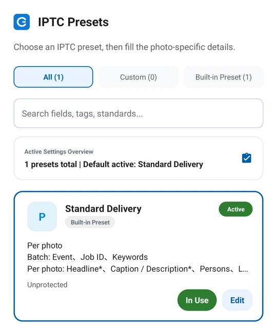

Decide what can be shared
Creator details, copyright and general assignment keywords are often reusable. People, actions and locations should match each image. Do not apply one caption to an entire batch without reviewing it.
Create and apply a preset
- Open IPTC presets and create or choose a configuration for the assignment.
- Select a group of photos and check the shared fields.
- Override captions or other fields for individual photos where needed.
- Generate the processed photos and inspect the first, last and individually adjusted files.
Remove details from the previous assignment
Old locations, event names and client information may not belong to the next batch. Check the preset name, active state and values before applying it, especially location and copyright fields.
Keep a verification step
Batch editing reduces repeated typing; it does not verify the facts. Inspect the actual generated files, because formats, workflow settings and per-photo overrides affect the result.

